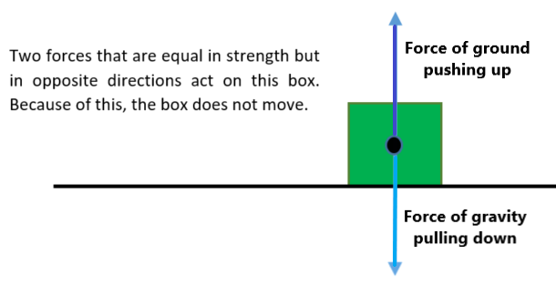

Force Direction and Motion
Acceleration from one force. An object will speed up (or "accelerate") in the direction
of the Net Force acting
on the object. (This idea is one part of Newton's Second Law.)
Example 1. For example, say there is only one force
(gravity) acting on an object. This force acts vertically
downward on the object (toward the center of the Earth). The object will accelerate in the
downward direction.

Because gravity pulls downward, no part of the force of gravity
pulls in the horizontal direction (which is perpendicular, or at a right angle, to the vertical
direction). Because there is no force of gravity
(or any other forces) in the horizontal direction, the object does not accelerate in the
horizontal direction. It falls straight down.
Acceleration from more than one force. Now, let's say an object is sitting on flat ground
(rather than freely falling). There are two forces acting on the object. Gravity
still pulls down on the object. However, the ground will push up on the object with the
same force. (When any two objects are in contact, they push on each other with the same amount of force, but
in opposite directions: See Newton's Third Law Unit.) Because the vertical forces
are "balanced", the net force
on the object in the up/down direction is zero and the object will not move
in this direction.

But what happens in the horizontal direction?
As we already said, the force of gravity is downward only. The
ground pushes straight up on the object. So,
neither force pushes the object in the horizontal direction. Because
there are no forces in the horizontal direction, the object does not accelerate—or change its motion—in
the horizontal direction either.
Acceleration of an object on a ramp.
Now, let's say that the object was on a hill instead of on flat ground (as shown
below). Gravity still pulls straight downward on the object, like it always does! The ground still pushes upward (perpendicular
to the surface) on the object. Let's
assume there is no friction between the object and surface of the hill to make things
simpler!

We want to see how "much" of each force is in the direction
of the hill. This will determine the acceleration of the object down the hill.
The force of the ground pushing up on the object is perpendicular
to the hill. Because of this, it does not affect the acceleration of the object down the
hill.
However, the force of gravity is no longer perpendicular to
the hill surface. The downward force of gravity can be separated into two parts:
- one part that is parallel to the surface of the hill, and
- the other part that is perpendicular to the surface of the hill. (See the figure below, to the right, for these parts)
In other words, some of the force of gravity is in the direction
of down the hill (the green arrow in the figure below to the right). Another
part of the force of gravity acts perpendicular to the surface, downward (the orange
arrow). This "component" of the force
of gravity does not affect the acceleration of the object.

So,
only the part of the force that is parallel to the surface of the hill affects
the motion of the object down the
hill.
Acceleration on steeper ramp. Let's make the hill even steeper! Now,
the part of the force of gravity that is parallel to the hill (in the direction of
the object's motion) is larger than
when the hill was less steep (in the last example).

In the extreme, the hill is a cliff, and the
object falls straight down. In this case, gravity acts entirely in the direction
of the motion of the object.

Summary. The bigger the force that is acting on an object in the direction of its
motion, the more the object will speed up in the
direction of the force while that force is acting on the object. As the hill
gets steeper, the part of the force of gravity that
acts down the hill increases. So, the object's speed increases more quickly (or the
acceleration increases) as the hill gets steeper.